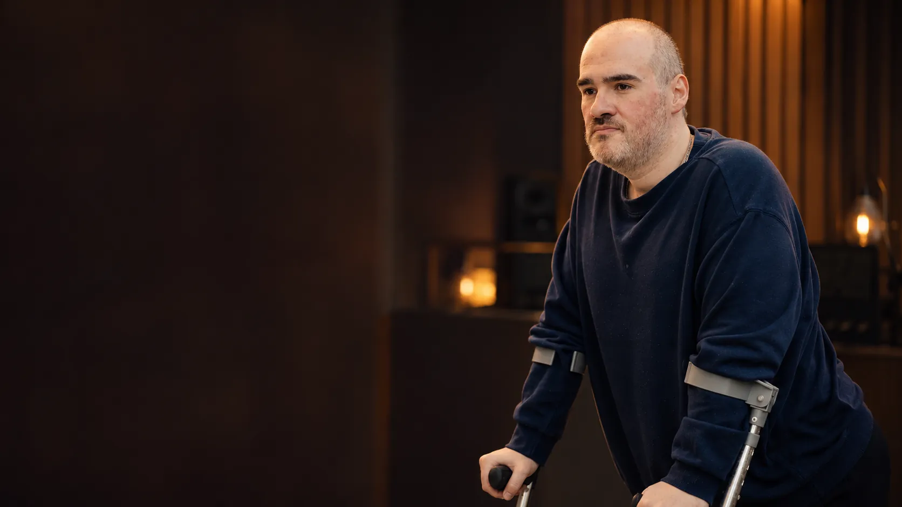

Projeto Rosa do Deserto
Seiscentas e três músicas,
quase todas escritas dentro de casa.
Juninho Bergamin mora sozinho em Londrina, num apartamento de trinta metros quadrados de onde quase nunca consegue sair. Foi ali, na maioria das vezes de madrugada, que as músicas foram aparecendo.
A primeira de todas
Saudade
Uma amiga contou que tinha perdido três filhos antes de eles nascerem. Ele não soube o que responder. Foi tomar banho e lembrou de uma coisa que a mãe contava: os médicos mandaram abortá-lo para que ela sobrevivesse, e o pai pediu para tentarem salvar os dois.
Ele saiu do chuveiro chorando e escreveu a letra inteira de uma vez. Naquela noite cantou pela primeira vez para o amigo que fez a melodia. Os dois choraram, e a diarista que estava na casa também.
“Qual é a sua diferença para as crianças dela?”
O que ele ouviu no chuveiro
Quem canta
Ele prometeu vinte músicas a uma amiga.
São seiscentas e três músicas e contando. Ele não senta para compor. Quando vem, escreve, e diz que se passar de um minuto não escreve mais. As letras são longas de propósito, porque ele não suporta música de três frases repetidas até a pessoa parar de pensar.
Antes de cada canção ele conta como ela nasceu. Sem a história ninguém entende a música, e sem a música ninguém aguenta a história.
Novidades
Ver tudo
Vem aí
O Casamento, a Rosa e a Pedra
Ele gravou devendo. Pediu patrocínio para quase quinhentas pessoas e recebeu cinquenta copos de brinde. Trinta pessoas apareceram na plateia. Ninguém saiu sem chorar.
Chame ele para cantar
Paróquia, retiro, encontro ou grupo de oração, em qualquer lugar do Brasil. Ele anda de muletas e não entra em carro comum, então quem convida cuida do deslocamento.
Como convidarAjude o projeto a andar
Cada contribuição vira gravação, divulgação e passagem. Dá para ajudar por Pix, em qualquer valor, e tudo que entra é contado aqui.
Como contribuir